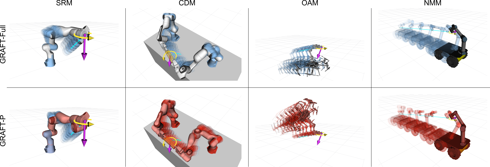

Unified Prescribed-Path Planning and Feasibility Checking Across Redundant Manipulators
Abstract
A redundant robot following a prescribed task-space path faces two coupled choices at each waypoint: which inverse-kinematics (IK) branch to follow, and how fast to traverse the path within the platform's actuation limits. Conventionally the planner that resolves them is rebuilt per platform, and a geometrically valid path may still be infeasible to execute. We show this per-platform rebuilding is largely unnecessary: across a serial arm, a cooperative dual-arm system, an aerial manipulator, and a mobile manipulator—platforms that constrain motion through unrelated mechanisms—fixed-path timing feasibility reduces to one computable condition, membership in a closed interval of admissible path accelerations, so a single TOPP-RA backend applies to all of them without modification. GRAFT decouples path selection (dynamic programming on a layered DAG, with a timing-invariant static preview) from fixed-path time scaling into one offline layer, used unchanged across all four platforms. For a prescribed path it returns a timed trajectory that passes the platform-model checks, or rejects the path with a diagnostic before commissioning. On an uncurated suite of random prescribed paths, GRAFT admits no model-infeasible path—zero false accepts—while recovering every path any compared method can solve; a GRAFT-planned trajectory executes on a physical dual-arm system; and on a simulated rail-arm cell beyond these four, the same load-aware selection extends the feasible payload by about 17% over load-agnostic baselines.
Methodology

Pipeline overview. The two stages—geometric path selection and fixed-path time scaling—are bridged by path fixation. Geometric path selection produces a configuration-continuous IK path on a layered DAG; fixed-path time scaling solves a TOPP instance using platform-specific acceleration-bound intervals. The platform evaluator Fplat supplies seven adapter components without touching either stage's shared logic.
Candidate Sets, Static Preview, and Layered DAG
At each task-space waypoint yk, a platform-specific generator Genplat samples a finite candidate set Ck from an IK solver bank (multistart FABRIK + damped least-squares). Each candidate is screened by a node-validity predicate Vk—sampled pose satisfaction, joint or allocation limits, collision clearance, and a static support-wrench or static-torque preview that catches timing-invariant infeasibility before graph inclusion. Adjacent candidates are connected by an edge predicate εk that encodes sampled continuity, velocity bounds, and platform-specific transition constraints (e.g., nonholonomic connectors). A single backward sweep on the resulting layered DAG yields the globally optimal finite-graph path in O(NK2) relaxations; if the terminal reachable set is empty, the planner reports a graph-disconnection failure rather than invoking adaptive resampling.
Common TOPP-RA Backend via Acceleration-Bound Intervals
Once the state path is fixed, finding a feasible schedule is a Time-Optimal Path Parameterization (TOPP) instance. The path is parameterized by arc length s ∈ [0, S], with optimization variables xk = ⋅sk2 and uk = ⋅⋅sk. Platform-specific feasibility enters through an acceleration-bound function Bplat returning, at each grid point, a closed interval [ulo, uhi]. A backward/forward reachability sweep in the path-coordinate variables produces the speed profile along the upper boundary of the controllable set. The four evaluated platform classes share this backend without modification.
Four Constraint Families, One Closed Interval at Each Grid Point
A platform is platform-admissible when its sampled fixed-path timing constraints can be written in TOPP-RA standard form Ωi = {(u, x) | aiu + bix + ci ∈ Ci} with Ci closed. The admissibility theorem shows that (i) affine RNEA torque chains intersected with per-joint limits (serial), (ii) bilateral cooperative wrench balance distributions (dual-arm), (iii) thrust-allocation zonotopes intersected with a 1D affine path-coordinate line (aerial), and (iv) geometry-conditioned affine bounds after connector path fixation (nonholonomic mobile) each yield a closed acceleration interval at every grid point—so the shared TOPP-RA pass applies without modification.
Seven Adapter Components Plug Into the Shared Scaffold
A new platform is integrated by specifying seven components—state space, task map, candidate generator, node validity, edge predicate, timing-bound model, and planning-model evaluator—while the geometric path selection and time-scaling stages operate unchanged. Four structural adapter patterns recur: product-space candidates for shared-object constraints, implicit-base generation for floating bases derived from arm reachability, auxiliary state for kinematically coupled secondary axes, and connector-lifted edge predicates for non-Euclidean mobility.
One Condition, Four Platforms
These four platforms constrain motion through entirely unrelated mechanisms—serial joint torque, cooperative wrench balance, aerial thrust allocation, and nonholonomic wheel-rate and arm-torque limits—yet each reduces to the same closed interval of admissible path accelerations. One TOPP-RA solver therefore schedules all of them unchanged; only the platform model plugs in.
Serial Redundant Manipulator
Cooperative Dual-Arm Manipulator
Omnidirectional Aerial Manipulator
Nonholonomic Mobile Manipulator
Representative GRAFT-planned, collision-aware accepted trajectories, one per platform class, on an obstacle-avoidance scenario, looped.
Serial Redundant Manipulator
A 7-DoF arm with one extra DoF and joint-torque limits. Its path-parameterized RNEA torque (evaluated with Pinocchio) τ = a(s)u + b(s,x)x + c(s) is affine in u, and each per-joint limit contributes a half-interval whose intersection is a closed interval.
Cooperative Dual-Arm Manipulator
Two arms rigidly grasping a shared object. Candidates live on a product configuration space with object-consistency constraints; per-arm torque budgets are coupled through a bilateral wrench-balance solve. Per-arm timing constraints reduce to the same affine coefficient form as the serial case, so the intersection is again a closed interval.
Omnidirectional Aerial Manipulator
Floating-base arm with tilt-rotor propulsion. Base pose is implied by an arm candidate via reverse-chain kinematics. Feasibility requires the path-coordinate body wrench W(s,x,u) ∈ 𝒲(φ), a 1D affine line through a thrust-allocation zonotope—an exact closed interval without convex relaxation.
Nonholonomic Mobile Manipulator
Differential-drive base + onboard arm. The edge predicate selects a kinematically valid bounded-curvature connector (Dubins-style) between consecutive base states; the same parameterization defines base motion for timing. Wheel-rate and acceleration limits combined with sampled arm-torque bounds yield a closed acceleration interval on each connector segment.
Experiments
Uncurated Random-Path Screening
For each platform we generate N = 50 prescribed paths from random SE(3) start/goal poses in the reachable region—the only pre-screen being endpoint-IK existence, with obstacles randomized per path; no path is curated for feasibility. GRAFT is run as a feasibility decision: it returns a timed trajectory or rejects the path. GRAFT-Full's false accept is zero on all four classes—no accepted path fails the platform-model check—while it recovers every path any compared method solves (recall 1.0 against the witnessed-feasible pool). A ten-times-budget independent search finds the candidate bank near-saturated (no missed feasible path on SRM/NMM; only two more on CDM and one on OAM). The witnessed-feasible fraction is 0.18–0.66, so GRAFT rejects the complementary 34–82% of each suite. A uniform TOPP-RA derating α = 0.90 reserves a 10% margin below the modeled limits.
| Platform | Wit. | Recall | Track (mm) | ||||
|---|---|---|---|---|---|---|---|
| Full | GRAFT-G | GRAFT-T | Greedy-NN | NullSp. | |||
| SRM | 27 | 1.00 | 0.52 | 0.00 | 0.63 | 0.19 | 1.0 |
| CDM | 9 | 1.00 | 1.00 | 0.00 | – | – | 9.2 |
| OAM | 26 | 1.00 | 0.00 | 0.00 | – | – | 0.06 |
| NMM | 33 | 1.00 | 0.52 | 0.00 | – | – | 0.96 |
Recall on the uncurated screening suite (N = 50 per platform). Wit.: witnessed-feasible paths (solved by at least one compared method), the set against which recall is measured. Track: 95th-percentile task-tracking error. Greedy-NN / NullSp.: serial-arm baselines ("–": no named alternative).
Each stage carries part of this. Removing fixed-path time scaling (GRAFT-T) drops recall to zero on every platform—an unscaled path satisfies no timing envelope. Removing graph-based selection (GRAFT-G) halves recall on SRM and NMM (0.52) and collapses it on OAM (0.00), while matching GRAFT-Full on CDM (1.00), where the rigid cooperative grasp leaves little branch ambiguity. On the serial arm GRAFT-Full also exceeds greedy nearest-neighbor tracking (0.63) and a null-space damped-least-squares rollout (0.19). No setting ever induces a false accept: completeness tracks the candidate budget, soundness does not.
SRM
CDM
OAM
NMM
Representative GRAFT-planned trajectories from the uncurated random-path screening suite (SRM, CDM, OAM, NMM).
Preview-Recall Under Load
To isolate the platform-model preview, we hold the path geometry fixed and sweep a bounded external load through three bins (low / mid / crushing), comparing GRAFT-Full against GRAFT-P (the same engine with only the preview disabled). GRAFT-Full holds recall at 1.0 on every feasible bin with zero false accepts, while GRAFT-P loses recall exactly where the load engages the model: at mid load it collapses (SRM 0.00, CDM 0.08, NMM 0.51) and on OAM—where gravity loads the allocation everywhere—it fails from low load up (0.00 throughout). GRAFT-P's dropped paths are rejected by the post-timing audit, not falsely accepted; the preview is the mechanism that turns a sound-but-low-recall decision into a sound-and-high-recall one.
| Platform | Method | Low | Mid | Crushing |
|---|---|---|---|---|
| SRM | GRAFT-Full | 1.00 | 1.00 | 1.00 (13) |
| GRAFT-P | 1.00 | 0.00 | 0.00 (13) | |
| CDM | GRAFT-Full | 1.00 | 1.00 | – (0) |
| GRAFT-P | 1.00 | 0.08 | – (0) | |
| OAM | GRAFT-Full | 1.00 | 1.00 | 1.00 |
| GRAFT-P | 0.00 | 0.00 | 0.00 | |
| NMM | GRAFT-Full | 1.00 | 1.00 | 1.00 (5) |
| GRAFT-P | 1.00 | 0.51 | 0.00 (5) |
Preview-recall under swept external load (N = 50 per bin); GRAFT-Full false accept is 0. "–": no witnessed-feasible path; parenthetical: witnessed-feasible set size when < 50.

Preview-driven branch selection under load (SRM, CDM, OAM, NMM; left to right). Top (blue): GRAFT-Full, whose platform-model preview steers selection to a load-feasible configuration. Bottom (red): GRAFT-P, whose preview-less selection drives the platform into an actuation-infeasible configuration under the same swept load (arrows).
Dual-Arm Hardware Execution
A GRAFT-planned cooperative dual-arm trajectory ran on a physical OpenArm system (two 7-DOF arms on a shared base) under its default position controller. In a barcode-scanning handling sequence, the arms pick a bucket, lift and tilt it so a barcode faces a fixed camera, and place it on a conveyor. The time-stamped joint command sequence played back to completion—no controller abort, protective stop, or reported limit-exceedance—and the executed object motion followed the planned path. This is a qualitative single-platform demonstration; the quantitative cross-platform claims rest on the simulation suites above.
Industrial Deployment: Rail-Arm Box Extraction
A RoboDK cell beyond the four classes—a six-axis Yaskawa Motoman GP110 arm on a one-axis linear rail (r = 1)—extracts a 2 m box from a freight bed to a conveyor. It is admitted unmodified because its actuation bounds are affine in the path variables (case (ii) of the admissibility theorem). The box cantilevers past the bed edge, so its load rises along the path—a timing-invariant load the static preview Vk evaluates directly. Sweeping the box mass, load-aware selection keeps the path feasible up to a 108 kg box, against 92 kg for the best load-agnostic method (NullSpace-DLS) and 89 kg for GRAFT-P—an ~17% higher feasible payload, carried to just below the arm's rated 110 kg envelope (at a 10% derating margin). Beyond the ceiling the static joint torque exceeds the actuator bound where the load binds, so every candidate at that waypoint fails Vk and the path is rejected at the geometric stage, before timing—a diagnostic naming the binding joint, not an executed trajectory.
The three methods on the same 102 kg box. GRAFT-Full's load-aware selection stays feasible, while GRAFT-P (preview disabled) and NullSpace-DLS (load-agnostic) do not. At 102 kg—above their feasible-payload ceilings (GRAFT-P 89 kg, NullSpace-DLS 92 kg) but below GRAFT-Full's 108 kg—only load-aware selection keeps the dominant joint within its torque limit.
Experimental Setup
All experiments run on an AMD Ryzen 5 7500F CPU (12 threads, 30 GiB RAM) with an NVIDIA GeForce RTX 5070 GPU on Ubuntu 22.04.5 LTS. The implementation uses Python 3.10, NumPy 1.26, SciPy 1.15, and Pinocchio 3.9 (ROS 2 Humble) for rigid-body dynamics. Candidate generation, node validity, edge feasibility, and DAG relaxation use platform-specific native or GPU batch backends where enabled; path-coordinate interval construction and the backward/forward reachability sweep run on CPU. Reported wall times measure task-level planning through accepted schedule construction and exclude the post-planning simulation pass.